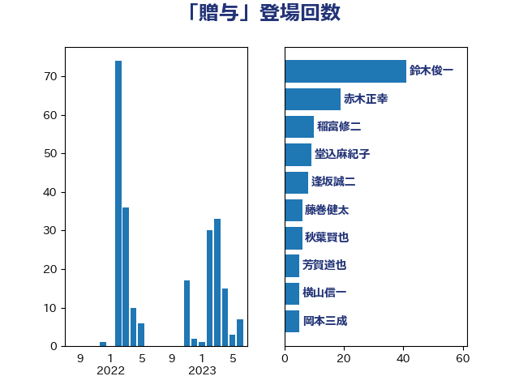

単語「贈与」

| 鈴木俊一 | 自由民主党 | 41 回 |
| 赤木正幸 | 日本維新の会 | 19 回 |
| 稲富修二 | 立憲民主党 | 10 回 |
| 堂込麻紀子 | 無所属 | 9 回 |
| 逢坂誠二 | 立憲民主党 | 8 回 |
| 藤巻健太 | 日本維新の会 | 6 回 |
| 秋葉賢也 | 自由民主党 | 6 回 |
| 芳賀道也 | 国民民主党 | 5 回 |
| 横山信一 | 公明党 | 5 回 |
| 岡本三成 | 公明党 | 5 回 |
| 住吉寛紀 | 日本維新の会 | 5 回 |
| 井林辰憲 | 自由民主党 | 5 回 |
| 井上貴博 | 自由民主党 | 5 回 |
| 浅田均 | 日本維新の会 | 4 回 |
| 落合貴之 | 立憲民主党 | 3 回 |
| 沢田良 | 日本維新の会 | 3 回 |
| 杉尾秀哉 | 立憲民主党 | 3 回 |
| 塩川鉄也 | 日本共産党 | 3 回 |
| 長友慎治 | 国民民主党 | 2 回 |
| 金子恭之 | 自由民主党 | 2 回 |
| 西村康稔 | 自由民主党 | 2 回 |
| 羽田次郎 | 立憲民主党 | 2 回 |
| 秋野公造 | 公明党 | 2 回 |
| 牧義夫 | 立憲民主党 | 2 回 |
| 林芳正 | 自由民主党 | 2 回 |
| 末松信介 | 自由民主党 | 2 回 |
| 城井崇 | 立憲民主党 | 2 回 |
| 勝部賢志 | 立憲民主党 | 2 回 |
| たがや亮 | れいわ新選組 | 2 回 |
| 馬場伸幸 | 日本維新の会 | 1 回 |
| 穀田恵二 | 日本共産党 | 1 回 |
| 稲津久 | 公明党 | 1 回 |
| 神津たけし | 立憲民主党 | 1 回 |
| 田島麻衣子 | 立憲民主党 | 1 回 |
| 渡辺周 | 立憲民主党 | 1 回 |
| 河野太郎 | 自由民主党 | 1 回 |
| 江田憲司 | 立憲民主党 | 1 回 |
| 東徹 | 日本維新の会 | 1 回 |
| 早稲田ゆき | 立憲民主党 | 1 回 |
| 後藤茂之 | 自由民主党 | 1 回 |
| 広瀬めぐみ | 自由民主党 | 1 回 |
| 大串博志 | 立憲民主党 | 1 回 |
| 前川清成 | 日本維新の会 | 1 回 |